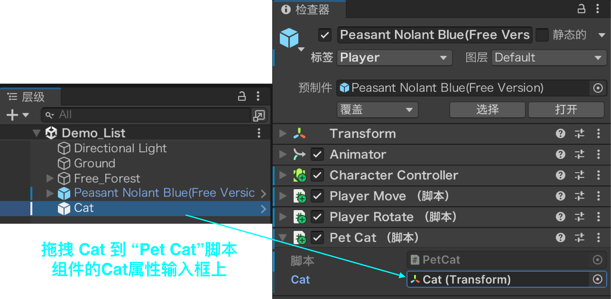
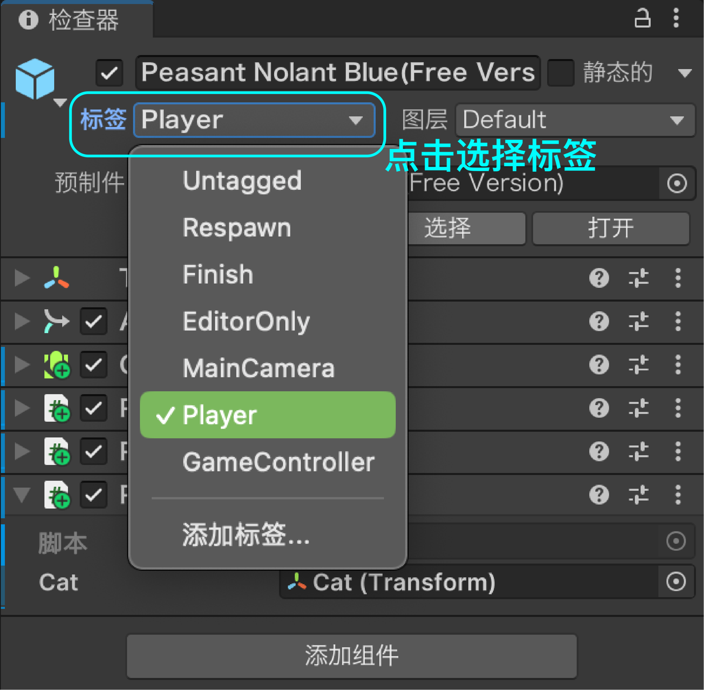
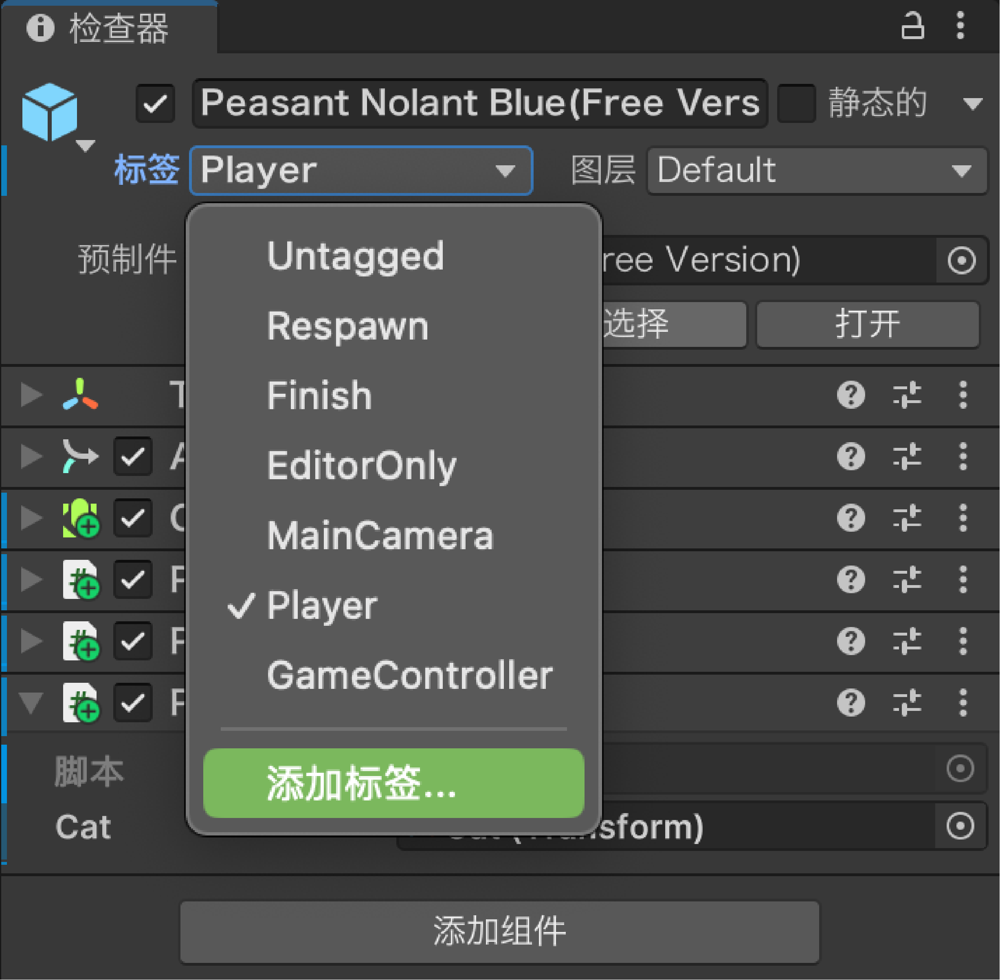
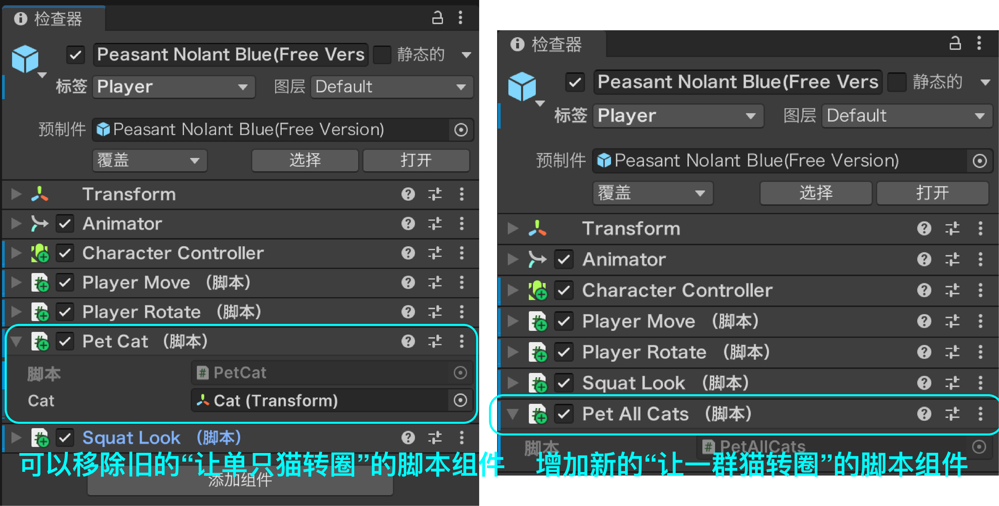

访问其他游戏对象
访问其他对象
前面取组件，取的都是自己身上的（GetComponent）或子物体身上的（GetComponentInChildren）。场景里还有"别的"对象——代码里要怎么把它们找出来？先看这个场景，一共三样东西：
Player：主角，也就是前面挂摄像机和移动脚本的那个游戏对象，能走能跳Main Camera：挂在 Player 下面（子对象，跟着人一起走）Cat：站在旁边的一只猫，和 Player 没有任何层级关系

接下来要让这只猫有反应：按 E 让猫转一圈、走近它猫会看向你、按 C 蹲下来看它。三件事看着不相干，其实都卡在同一个前提上。
共同要点：三个反应都先要"拿到对方"
先别急着写代码。把三个反应摆在一起看，会发现它们差的其实是同一步——代码里要操作的东西，没有一个是脚本自己：
- 让猫转一圈 → 得先拿到 Cat
- 让猫看向你 → 猫身上的脚本得先拿到 Player
- 蹲下来看猫 → 得先拿到 Main Camera
麻烦在于：代码默认只认自己——GetComponent 只能拿自己（或子物体）身上的组件，拿不到场景里别的对象。所以这三个反应都卡在同一个前提上：先在代码里拿到对方的引用（reference）。
而"拿到对方"的路不止一条，也没有哪一种能通吃——两个对象之间的关系不一样，能用的办法就不一样。下面三种写法，就分别对应三种不同的关系。
① 公共变量拖引用 · 让猫转一圈

最直接的一种：声明一个 public 变量，把 Cat 从层级（Hierarchy）拖到脚本的槽位上，之后随手就能用。Player 和猫本来是两不相干的，这一拖就把它们"连"上了。
要注意一点：拖进去的是同一只 Cat，脚本收到的值却由槽位的类型决定：
- 槽位写成
Transform，拿到的是 Cat 身上的 Transform 组件（管位置、旋转、缩放） - 槽位写成
GameObject，拿到的是 Cat 这个对象本身

using UnityEngine;
public class PetCat : MonoBehaviour {
public Transform cat; // ① 在检查器里把 Cat 拖进来
private float spinTime; // 猫还要转多久
void Update() {
if (Input.GetKeyDown(KeyCode.E)) spinTime = 1f; // 按 E 摸一下
if (spinTime > 0f) {
cat.Rotate(0f, 360f * Time.deltaTime, 0f); // 猫开心地转一圈
spinTime -= Time.deltaTime;
}
}
}代码讲解
- 挂载与拖引用：脚本挂在 Player 上（按 E 撸猫的人）。写上
public Transform cat，脚本在检查器（Inspector）里就会多出一个 Cat 槽位，把场景里的 Cat 拖进去——这一步就是把两个本来不相干的对象"连"起来。槽位类型决定脚本拿到什么：这里声明的是Transform，拖进去拿到的就是 Cat 的 Transform 组件，所以后面能直接写cat.Rotate(...)；若改成public GameObject cat，拿到的就是 Cat 这个对象本身，旋转得写成cat.transform.Rotate(...)，用它的 Transform 去找组件也一样要先GetComponent。 - 为什么用 public：
cat设成public，图的就是在检查器（Inspector）里露出来、能被拖；spinTime设成private，因为它是脚本内部临时用的计时器，不需要在面板上看见。 - 按键触发：
Input.GetKeyDown(KeyCode.E)只在按下 E 的那一帧为 true，所以按一次就等于"启动一次旋转"。 - 为什么要计时：猫要转一整圈（360°），用
spinTime记 1 秒、转完自动停；如果直接写cat.Rotate(...)，就变成每一帧都在转，猫会一直转个不停。 - 每帧转多少：
360f * Time.deltaTime就是"1 秒转一整圈"的速度——Time.deltaTime是上一帧花掉的时间，乘上去让旋转与帧率无关，机器快慢都是 1 秒一圈。 - Rotate 的三个参数：分别对应绕 X / Y / Z 轴的旋转角；这里只在中间那个位置填了数（绕 Y 轴），所以猫是原地左右转，不会翻跟头。
标签（Tag）
标签就是贴在对象身上的"分类牌"。名字是唯一的——一个场景里不会有两个都叫 Player 的对象；标签却能让很多对象共用，比如一堆敌人都贴上 Enemy。所以按标签找，就是把"这一类"对象叫出来。另外注意：一个对象只能有一个标签。
Unity 默认自带 7 个内置标签，新建项目就能直接用（它们不在 Tag Manager 里，是引擎自带的）：
| 内置标签 | 留给谁 |
|---|---|
Untagged | 没分类的对象——新建出来的对象默认就是它 |
Respawn | 复活点 |
Finish | 终点 |
EditorOnly | 只在编辑器里用的对象，打包时连着它的子对象一起被删掉 |
MainCamera | 主摄像机——代码里的 Camera.main 认的就是它 |
Player | 玩家角色 ← 这一节用的就是它 |
GameController | 游戏管理器 |
这 7 个里，只有 MainCamera 和 EditorOnly 有引擎自己的行为（就是上表里那两条）；其余几个——包括本节用的 Player——都只是提前占好的名字，引擎不会因此做任何事，认不认它，全看你自己的代码。
标签还有个规矩：一旦命名就不能改名，起名时要想清楚；不够用时可以自己新建，见下一张卡。

自定义标签 · 添加标签…（Add Tag…）
内置的 7 个标签不够用？标签可以自己新建——比如给猫贴一个 Cat、给敌人贴 Enemy。三步就能加好：
- 选中对象，点检查器（Inspector）顶部的 标签（Tag）下拉，选最底下的 添加标签…（Add Tag…）
- 在打开的 标签和层（Tags & Layers）面板里展开 标签列表（Tags），点右下角的 加号（+），在 新标签名称（New Tag Name）框里填名字（如
Cat）——填完不用保存，切回场景即可 - 回到对象的 标签（Tag）下拉，就能看到并选上刚建好的标签（位置和刚才给角色选
Player一样）
新建的标签和内置标签用法完全一样：一样出现在下拉里、一样能用 GameObject.FindWithTag("Cat") 去找。


按组件类型查找 · 让所有猫一起转圈
前面三种找法，看的都是对象的名字或关系。还有一路完全不同——不看名字、也不看层级，只看身上挂了什么组件。
场景里现在有三只猫，每只身上都挂着同一个 CatBrain 脚本。① 里我们已经会让一只猫转圈了——靠的是把那只猫拖进引用；现在猫变成了三只，总不能拖三个引用、再写三遍名字，这时就该按组件类型找：
FindObjectOfType<T>()：第一个挂着 T 组件的对象FindObjectsOfType<T>()：所有挂着 T 组件的对象（返回一个数组）

先换脚本：PetCat → PetAllCats
① 里招呼猫的脚本 PetCat 只面向一只猫——槽位里拖的就是那一只；它还和 CatBrain 抢同一只猫的旋转（见 ② 页的 ⚠️），本来也用不上了。这一页要一次招呼一群猫，所以在 Player 的检查器（Inspector）里先移除旧的 PetCat，再挂上新的 PetAllCats：它不用再拖猫的引用，改成按组件类型一次把场景里的猫全找出来（玩家不用找——脚本就挂在 Player 上）。
- 移除旧的：选中 Player，在检查器里找到
PetCat组件，点它右上角的三个点（⋮）→ 移除组件（Remove Component） - 挂上新的：把
PetAllCats脚本从项目（Project）窗口拖到 Player 上，检查器里就会多出这个新组件

using UnityEngine;
public class PetAllCats : MonoBehaviour {
private CatBrain[] cats; // 场景里所有的猫，都挂着 CatBrain
private float spinTime; // 还要转多久（① 里也用过）
void Start() {
cats = FindObjectsOfType<CatBrain>(); // 一次把所有的猫全拿到
}
void Update() {
if (Input.GetKeyDown(KeyCode.E)) spinTime = 1f; // 按 E 招呼一声
if (spinTime > 0f) {
for (int i = 0; i < cats.Length; i++) {
Transform cat = cats[i].transform; // 拿到的是组件
cat.Rotate(0f, 360f * Time.deltaTime, 0f); // 每只猫都转一圈
}
spinTime -= Time.deltaTime;
}
}
}代码讲解
- 挂载：脚本挂在 Player 上——是"招呼猫的人"在喊，不是猫自己。
- 从一只到一群：循环里那句
cat.Rotate(0f, 360f * Time.deltaTime, 0f)就是 ① 里的原话——① 用拖进来的一个引用转一只猫，这里用数组把同一件事对每一只猫做一遍。要干的活一个字没变，变的是"一次招呼几只"。 - 按组件类型找同类：
FindObjectsOfType<CatBrain>()不看名字、不看层级，只找身上挂着CatBrain组件的对象，一次返回一个数组——场景里有几只猫，数组就有几个元素。这就是"批量"：不用拖三个引用，也不用写三遍Find。 - 为什么声明成
CatBrain[]：它返回的是组件的数组，不是对象的数组，所以cats[i]是CatBrain组件，要取位置 / 旋转得写cats[i].transform。 - 为什么放在 Start：查找是"找一次就够"的事，放
Start只跑一遍。千万别写进Update——那等于每帧把整个场景扫一遍，白白费性能。 - 只想要"一个"就用
FindObjectOfType<T>()：它返回第一个挂着 T 组件的对象，不是数组。后面的作业里，球找玩家用的就是它——球不知道玩家叫什么名字，但知道玩家身上挂着PlayerMove。 - 按键触发：
Input.GetKeyDown(KeyCode.E)只在按下 E 的那一帧为真，所以按一次触发一次；spinTime那套是 ① 学过的——按 E 记 1 秒，转满 1 秒就自动停，猫不会转个没完。 - 循环做同一件事：
for按i < cats.Length把数组走一遍，对每一只猫都做一次——场景里有几只猫就转几只，多一只少一只都不用改代码，这就是"批量"。 - 下标从 0 开始：
cats[0]是第一只猫，所以循环条件写i < cats.Length而不是<=，否则会越界报错。
CatBrain，只要你在 3 米内，它每帧都会把猫转向你，转圈会被它盖掉——就是 ② 页那条 ⚠️ 说的情况。FindObjectsOfType 要遍历整个场景，比较慢：只在 Start 里找一次、把结果存进变量；确实只要"一个"时，就用更轻的 FindObjectOfType。